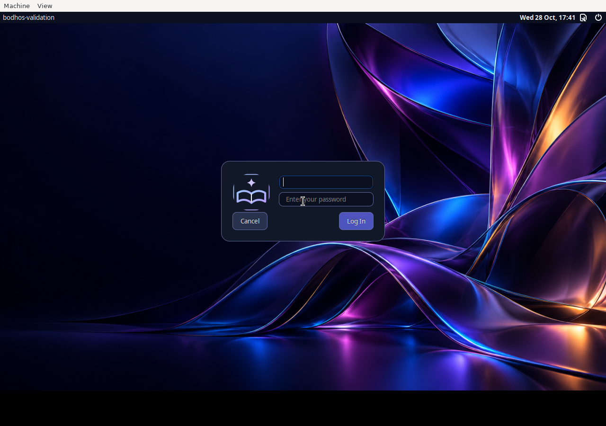

A school desktop for learning and coding.
A familiar Start menu, student projects, everyday apps and coding tools. Built for x86_64 PCs.
- Save the helper in a new empty folder with 8 GB free.
- Open it and keep the window open while it downloads and checks your ISO.
- Wait for SUCCESS - VERIFIED ISO READY. Use the finished BodhOS-PC-0.3.0-desktop3-amd64.iso in a new VM or write it to a USB.
The helper prepares the ISO. It does not install Bodh OS or erase a disk. If your school blocks command files, use the manual option below.
A clearer desktop. A fresh sign in.
Wallpaper based Light and Dark styling, twelve wallpapers, a cleaner taskbar, desktop coding shortcuts and an updated blue and violet login screen. Optional touchpad gestures stay off until enabled on supported hardware.

Included in 0.3.0
Native MySQL Lab with a private database you start when needed. Working database examples for eight language paths. Java, PHP, Go and Node.js starters alongside the existing Python, C, C++, web, Arduino and SQL tools.
Personal student accounts keep work after reboot. The separate temporary Classroom account clears its home on logout. Standard and Reduced appearance are available. Glass is removed.
All included features · Presentation and study guide · Exact test results
Manual download, Linux and macOS
Download all three files to one folder.
On Windows, extract the Guides ZIP beside both parts and open Join PC ISO.cmd. Wait for SUCCESS.
On Linux or macOS, follow JOIN-INSTRUCTIONS.txt in the ZIP. Both parts are required. GitHub limits individual asset sizes. Joining creates one complete ISO. Neither a part file nor GitHub's Source code ZIP can boot.
Mac downloads and limits
The new PC ISO works for an Intel VM or x86_64 emulation. There is no native Apple silicon image. Read Mac download choices.
The older experimental MacBookPro15,2 image remains Preview 0.39. It does not include this update. Physical Mac installation remains unverified.
Checksums, changes and troubleshooting
SHA256 checksums · Release files and notes
If VirtualBox rejects the file, run the helper and wait for SUCCESS. Attach the finished file ending in .iso under Settings, Storage, Optical drive. Do not attach a part file. Keep the same BIOS or EFI setting after installing.
A successful school session was reported on a Ryzen 3 family PC with 4 GB RAM. Exact hardware and the tested image were not recorded. VM results and that report do not prove compatibility with every school computer.